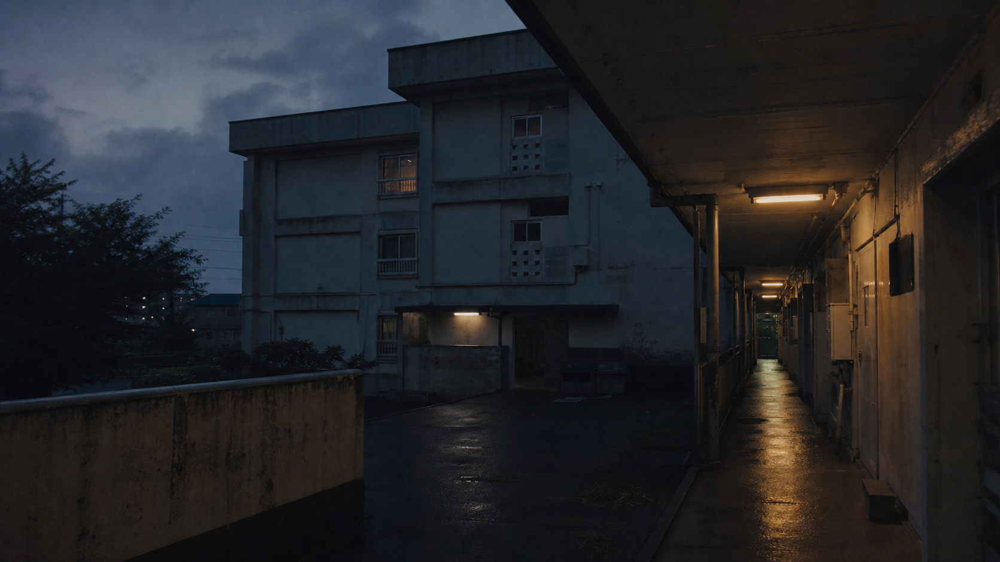

北廊下
配管スペース付近。水音の検証。

KCT Local Archive / 未放送番組
かすみ野団地に残された取材素材。公開原稿と素材ラベルの不一致により、放送前日に保留。
制作番号
4月17日に撮影された、かすみ野団地2号棟204号室に関する調査番組。番組原稿は室内検証としてまとめられているが、素材台帳には共用部の録音が多く残る。
配管スペース付近。水音の検証。
蛍光灯交換後の点滅確認。
壁面反響の録音。
追加証言の再録。
素材ラベルとテロップ案が一致しない。番組版では四つの共用部素材が「204号室」としてまとめられている。差し替え前のラベルを確認すること。